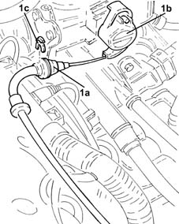
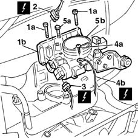

1056B14 throttle case - r + r
- Path
- Procedures > 10 ENGINE > 1056 PETROL INJECTION SYSTEM > 1056B multi-point injection system (mpi) > 1056B14 throttle case - r + r
- Kind
- repair procedure (removal / refitting; the operation number is the code)
- Applies to
- engines: 1.2 8v; all production periods
- Interactive page
- https://sloeber94.github.io/elrnDB-lYpsln/en/#/2428920
Applies to: engines: 1.2 8v; all production periods
 Removing
Removing
 Refitting
RefittingEnsure that the ignition key is in OFF position, then disconnect the battery negative terminal (-).
 | Name | Connector |
|---|---|---|
- | Battery |
Proceed with removal 1048A10 air cleaner filtering element - replace .
1. Disconnect the accelerator cable (1a) from the throttle valve drive (1b), release from the mounting bracket (1c) and move aside.

Applies to: engines: 1.2 8v; all production periods
1. Undo the bolts (1a) and move the injection/ignition control unit control unit (1b) aside.
2. Disconnect the electrical connection from the throttle valve position sensor.
| Name | Connector |
|---|---|---|
2 | Throttle position sensor |
3. Disconnect the engine idle actuator electrical connection.
| Name | Connector |
|---|---|---|
3 | Idle actuator |
4. Undo the nut (4a) and disconnect the earth lead (4b) from the injection/ignition control unit.
| Name | Connector |
|---|---|---|
4b | Injection ECU earth |
5. Undo the fixing bolts (5a) and remove the throttle body (5b).

Applies to: engines: 1.2 8v; all production periods
Refitting
RemovingPlace the throttle body back in its housing and secure it tightening the bolts to the recommended torque.
Connect the earth lead to the injection / ignition control unit and secure it with its bolt.
Connect the engine idle actuator electrical connection.
Connect the electrical connection to the throttle valve position sensor.
Refit the fuel injection/ignition control unit in its seating and secure it with its bolts.
Refit the throttle cable and secure to the bracket.
Connect the accelerator cable to the throttle valve.
Proceed with refitting 1068A10 accelerator pedal control - check, adjust if necessary and lubricate .
Proceed with refitting 1048A10 air cleaner filtering element - replace .
Connect the negative (-) battery terminal.
Topics linked from this page (6)
- 1048A10 air cleaner filtering element - replace
- 1068A10 accelerator pedal control - check, adjust if necessary and lubricate
- A1B Battery ( BATTERY NEGATIVE )
- C60 Injection ECU earth
- K56 Throttle position sensor
- N74 Idle actuator